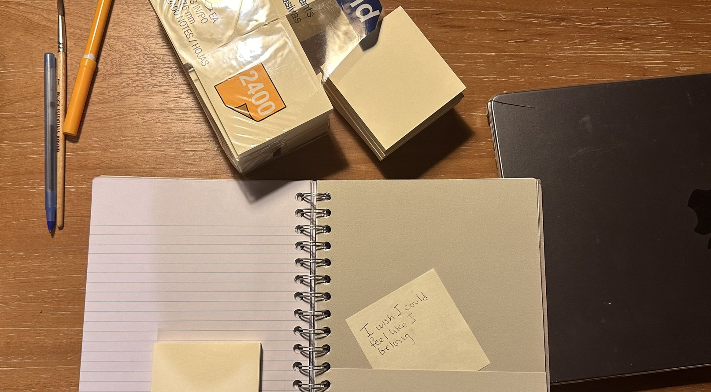

Common Ground is a project that lets people express themselves and connect with others through a simple set of anonymous, handwritten notes. Every note finishes the same sentence: "I wish I could…" There are no names, no likes and no followers, only wishes, and the people who recognize themselves in them.

How it started
While working on my thesis, I was very interested in interaction. I started by researching social media: how apps are designed to keep us scrolling, and how much of what we share online is shaped to be liked. During one brainstorming session, I came to a simple conclusion: the most memorable interactions are not between people and screens, but between people. I became curious about how I could make an interactive space that would make it easier for strangers to meet and relate to each other.
The reason I chose handwritten notes is that handwritten notes can translate a much more personal feeling and make it easier for people to connect. In the time of AI and technology, I felt that the sensibility of a handwriting and a paper texture carries a special value. Posting a hand-written note slows people down, making every note feel valuable. The first notes were collected in person on paper sticky notes (late October-early November 2026).
How it works
Common Ground is built on the same logic as Google's TensorFlow Embedding Projector, a tool that shows how an AI groups meaning in 3D. The site reads each note, understands what it means, and places it in a 3D space next to notes with a similar meaning.
You write your wish on paper and scan the QR code with your phone.
AI reads your handwriting (Google Cloud Vision), and you check that it read it correctly.
Your note is sent to be reviewed by our moderator. Everyone else sees it once it's approved.
A second AI model reads what your wish means. It turns each wish into numbers that describe its meaning, and it runs in your browser.
Your note is placed near notes with a similar meaning. As more notes appear, groups start to form based on submitted notes. Groups form from a minimum of 3 wishes to start a group.
Care and privacy
All notes are anonymous. Please don't include names or contact details.
Every submission is reviewed by me before it appears on the map.
Notes that could reveal personal information are never made public.
Notes about self-harm are never posted. The writer is shown where to find support instead.
Visits are counted anonymously for research: where people came from and what they click, with no names or exact location.
Inspirations
Before I Die by Candy Chang (2011): a public chalkboard wall in New Orleans, now in over 75 countries.
Subway Therapy by Matthew Chavez (2016): sticky notes in NYC subway stations.
We Feel Fine by Jonathan Harris and Sep Kamvar (2006).
This Exquisite Forest by Aaron Koblin and Chris Milk (Google).
Google's TensorFlow Embedding Projector.
About me
I'm Aiya, a senior in Communication Design at Parsons School of Design, based in Brooklyn. Common Ground is part of my thesis, where I explore how people can connect through technology and what happens when personal, offline expression meets online data. I grew up practicing fine art, and I now work where design, code and people meet. I researched and designed this project in Figma and built it with HTML, CSS and JavaScript, using a 3D graph library and Claude Code (an AI coding tool).